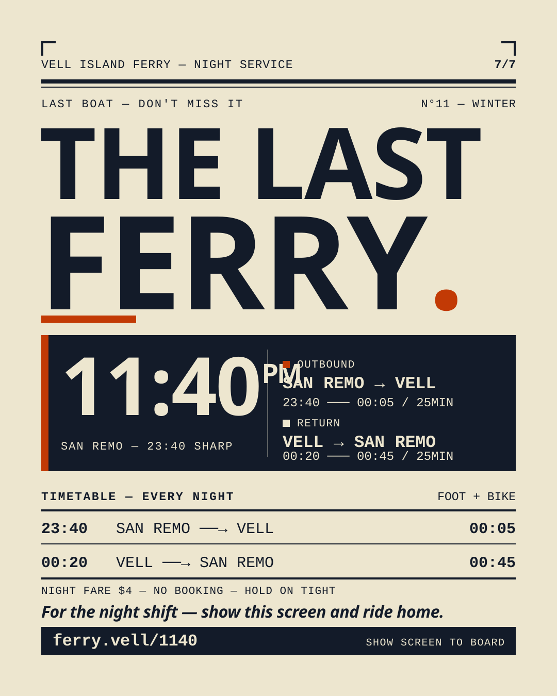

01 · Poster
prompt (thin)
Design a poster for "The Last Ferry, 11:40pm" — a late-night ferry crossing between two islands. Output: one SVG file, 1080 × 1350.
prompt (thick)
A poster for "The Last Ferry", the 11:40pm crossing between San Remo and the island of Vell. Output: one SVG file, 1080 × 1350. Must contain: the title, the time, both directions, one line of copy, and the URL `ferry.vell/1140`. Audience: night-shift workers, 24–40, urban and tired. It is seen on a phone at 11pm but printed at A2. Direction: two inks plus one paper tone. A condensed grotesque for the display, a monospace for the timetable block. Margins no tighter than 7% of the shorter edge. No imagery other than type and hard geometry. Avoid: gradients, drop shadows, faux paper texture, badges or stickers, stock photography, everything centred. Success: legible at phone size, unmistakably a schedule, and something a person would tear off a wall.


02 · Interface
prompt (thin)
Build the hero and one value section for Inkwell, a tool that turns handwritten notes into LaTeX. Output: one HTML file, 1440 × 900, no page scrolling.
prompt (thick)
Build the hero and one value section for Inkwell. Output: one HTML file, 1440 × 900, no page scrolling. What it is: you photograph a page of handwriting and get clean LaTeX back, with the original and the rendered output side by side. Must contain: the product name; a headline; one sentence explaining the conversion; three concrete capabilities — equations and tables handled, revision history per page, export to `.tex` or `.pdf`; a primary action "Try a page free"; a secondary action "See a real conversion". Audience: PhD students and researchers who already write LaTeX daily and distrust marketing pages. Direction: show the product rather than describe it — the hero must display a photograph of handwriting beside its rendered output, drawn with CSS or inline SVG. Use one serif for the headline and one grotesque for interface text. A muted, paper-like palette. Avoid: gradient hero, purple, centred hero with a blurred blob, three identical feature cards, emoji as icons, the words seamless / elevate / unlock, a fake "trusted by" logo strip. Success: at 1440 × 900 a researcher knows what it does within three seconds and has seen evidence it works.
03 · Critique
prompt (thin)
Here is a landing page I shipped. Critique it, then fix it. Output: one HTML
file at 1440 × 900, containing the improved page, with a note of at most 150
words in an HTML comment at the top explaining what you changed.
```html
<!doctype html>
<html><head><meta charset="utf-8"><title>Ferryline — Book your crossing</title>
<style>
body{margin:0;font-family:Inter,system-ui,sans-serif;color:#111;background:#fff}
.hero{padding:120px 40px;text-align:center;background:linear-gradient(135deg,#7c3aed,#ec4899);color:#fff}
h1{font-size:56px;margin:0 0 16px}
p{font-size:20px;opacity:.9;max-width:640px;margin:0 auto 32px}
.cta{display:inline-block;padding:16px 32px;border-radius:999px;background:#fff;color:#7c3aed;font-weight:600;text-decoration:none}
.cards{display:grid;grid-template-columns:repeat(3,1fr);gap:24px;padding:80px 40px}
.card{border:1px solid #eee;border-radius:16px;padding:32px;background:#fafafa}
.card h3{margin:0 0 12px}
footer{padding:40px;text-align:center;color:#666;font-size:14px}
</style></head>
<body>
<section class="hero">
<h1>Book your crossing in seconds</h1>
<p>Ferryline connects you to the islands you love with a seamless, modern
booking experience that puts you first.</p>
<a class="cta" href="#">Get started</a>
</section>
<section class="cards">
<div class="card"><h3>Fast</h3><p>Book in under a minute with our streamlined flow.</p></div>
<div class="card"><h3>Simple</h3><p>No hidden fees, no surprises, just clear pricing.</p></div>
<div class="card"><h3>Reliable</h3><p>Thousands of travellers trust us every day.</p></div>
</section>
<footer>© Ferryline 2026 — All rights reserved</footer>
</body></html>
```prompt (thick)
Here is a landing page I shipped. Output: one HTML file at 1440 × 900,
containing the improved page, with a note of at most 150 words in an HTML
comment at the top.
Do three things, in this order:
1. Diagnose — the five most damaging problems, ordered by impact.
2. Fix — repair them in the page. Do not rebuild it from scratch; keep the
product, the structure and any copy that is defensible.
3. Record — in the note, list what you changed and what you deliberately left
alone.
Audience: ferry passengers booking on a phone, who do not care about the
brand.
You may rewrite copy only where it is vague or inflated. You may not add
sections the product does not have.
Avoid: replacing the page with a different generic landing page; removing
content to make the layout easier; fixing everything instead of the five that
matter.
Success: the same page, visibly better, and the priorities in your note match
the fixes actually made.
```html
<!doctype html>
<html><head><meta charset="utf-8"><title>Ferryline — Book your crossing</title>
<style>
body{margin:0;font-family:Inter,system-ui,sans-serif;color:#111;background:#fff}
.hero{padding:120px 40px;text-align:center;background:linear-gradient(135deg,#7c3aed,#ec4899);color:#fff}
h1{font-size:56px;margin:0 0 16px}
p{font-size:20px;opacity:.9;max-width:640px;margin:0 auto 32px}
.cta{display:inline-block;padding:16px 32px;border-radius:999px;background:#fff;color:#7c3aed;font-weight:600;text-decoration:none}
.cards{display:grid;grid-template-columns:repeat(3,1fr);gap:24px;padding:80px 40px}
.card{border:1px solid #eee;border-radius:16px;padding:32px;background:#fafafa}
.card h3{margin:0 0 12px}
footer{padding:40px;text-align:center;color:#666;font-size:14px}
</style></head>
<body>
<section class="hero">
<h1>Book your crossing in seconds</h1>
<p>Ferryline connects you to the islands you love with a seamless, modern
booking experience that puts you first.</p>
<a class="cta" href="#">Get started</a>
</section>
<section class="cards">
<div class="card"><h3>Fast</h3><p>Book in under a minute with our streamlined flow.</p></div>
<div class="card"><h3>Simple</h3><p>No hidden fees, no surprises, just clear pricing.</p></div>
<div class="card"><h3>Reliable</h3><p>Thousands of travellers trust us every day.</p></div>
</section>
<footer>© Ferryline 2026 — All rights reserved</footer>
</body></html>
```04 · Motion
prompt (thin)
Animate the word DRIFT as an 8-second looping title card. Output: one HTML
file, 1280 × 720. Expose `window.__anim = { duration: 8, seek(t), play(), pause() }`
where `seek` is deterministic.prompt (thick)
Animate the word DRIFT as an 8-second looping title card. Output: one HTML
file, 1280 × 720. Expose `window.__anim = { duration: 8, seek(t), play(), pause() }`
where `seek(t)` renders the exact state at time t and is safe to call at any
point.
It is the title card for a short film about a ferry crossing at night.
Direction: the word must be legible at rest for at least two seconds of the
eight. Movement must be motivated — nothing moves without a reason in the
sequence. Use one typeface. Two colours maximum. Keep the loop's seam
invisible: the final frame must flow into the first.
Avoid: elastic or bounce eases, letter-by-letter fade-up, drop shadows, glow,
glitch or particle effects, white flash frames, motion that never settles.
Success: a viewer can describe the sequence as having a beginning, a middle and
an end, and cannot see where it loops.05 · Explanation
prompt (thin)
Explain how DNS works to someone who has never thought about it. 150 words maximum. Output: markdown.
prompt (thick)
Explain how DNS works to someone who has never thought about it. 150 words maximum, counting the title if you write one. Output: markdown. Audience: a smart adult, not technical, who has only ever seen DNS in an error message. Must cover: the problem it solves, what happens between typing an address and the page appearing, why answers are remembered, and what usually goes wrong. Every technical term must be glossed in plain words at its first use. You may use one analogy, once. A second analogy costs you the piece. Avoid: the phone book, the postal service, "imagine a", "today's digital world", three-item lists used as padding, and em-dash chains. Success: a reader could retell it to a colleague in one sentence without getting it wrong.
# How DNS Works
Computers find each other using numbers called IP addresses, like 142.250.72.14. Humans prefer names like example.com. DNS translates names to numbers.
When you type a web address:
1. Your computer asks a resolver, usually run by your internet provider.
2. If it recently looked up that name, it answers from memory.
3. Otherwise it asks around: the root directory, then the directory for `.com`, then the site's own directory.
4. That final directory gives the correct number.
5. Your computer uses it to connect.
The result is saved briefly, so the next visit is faster. All this happens in milliseconds.
# Where Names Become Places
DNS (the system that turns typed names into computer locations) exists because people remember words while computers connect using numbers.
When you type an address (the words you enter, such as example.com) your browser (the program that shows web pages) asks a resolver (a helper computer that already knows where to start looking) for the matching number. That helper checks with the computers in charge of each part of the name until one returns the current number. Your browser then contacts that number and the page appears.
Answers are remembered for a set lifetime (a short reuse period) so repeat visits skip the search and load faster.
Most failures are simple: a mistyped name or the helper being briefly unreachable.
06 · Fiction
prompt (thin)
Write a 100-word story containing a broken clock. No dialogue. Output: markdown.
prompt (thick)
Write a 100-word story, exactly 100 words, containing a clock that is wrong. No dialogue, no quoted speech. Output: markdown. Setting: a workplace after hours. Third person, limited to one character, who is not the narrator. The clock must earn its place — something in the story depends on it. Avoid: weather standing in for emotion, "a chill ran down", stacked similes, a twist in the last sentence, and any word you would only use in a story. Success: something has changed between the first sentence and the last, and the reader can say what.
Mara inherited the old farmhouse after her grandmother passed, accepting dust, mice, and silence without complaint. In the hallway hung a broken clock, its hands frozen at midnight, its chime forever swallowed. She never repaired it, preferring time softened and unmeasured. Mornings she baked bread, evenings she tended roses climbing the porch rails. Seasons turned outside while inside remained still, gentle, unhurried. Neighbors called her strange for living beside stopped time, yet she felt freed. Without ticking hours, memories lingered longer, grief eased slower, joy deepened. At night she touched the glass, grateful that some moments refuse to pass onward.
Mara stayed late to finish quarterly reports alone in the empty office. The wall clock above the copier read seven forty, giving her confidence she could still catch the eight fifteen bus downtown. She worked steadily through spreadsheets, checking totals twice and printing pages for review tomorrow. When she finally saved everything and shut her computer down, she noticed her phone showed nine oh six. The old clock had stopped hours earlier. She missed her bus and felt anger rising. She gathered her bag slowly and settled onto the couch to wait for the next morning departure in quiet frustration.
07 · Build
prompt (thin)
Write `parseDuration('1h30m')` returning seconds, with tests. Output: one
`.mjs` file that runs its own tests with `node:test` when executed.prompt (thick)
Write `parseDuration` and its tests. Output: one `.mjs` file that runs its own tests with `node:test` when executed. Signature: `parseDuration(input)` → number, in seconds. Accepts: one or more `number + unit` segments concatenated, units `h`, `m`, `s`, case-insensitive, e.g. `"1h30m"`, `"90s"`, `"2h"`, `"1H2M3S"`. Segments may appear in any order. Each unit at most once. Integers only, no spaces. Rejects, by throwing `TypeError` with a useful message: empty string, unknown unit, repeated unit, bare number with no unit, negative numbers, non-string input. `"0s"` returns `0`. `"1h"` returns `3600`. No dependencies. No classes. No options object. At most 60 lines including tests. Tests must cover the happy paths, each rejection case, and one composite. Avoid: silently coercing invalid input, regex you cannot explain on a second read, an abstraction layer for three units. Success: a reviewer understands it in one pass, and the tests fail if the parser regresses.
import { describe, it } from "node:test";
import assert from "node:assert/strict";
export function parseDuration(input) {
if (typeof input !== "string") throw new TypeError("parseDuration expects a string");
let s = input.trim();
if (s === "") throw new Error("parseDuration: empty string");
let factor = 1;
if (s[0] === "-" || s[0] === "+") { factor = s[0] === "-" ? -1 : 1; s = s.slice(1).trim(); }
if (/^\d+(?:\.\d+)?$/.test(s)) return factor * parseFloat(s);
const per = { ms: 0.001, s: 1, sec: 1, secs: 1, second: 1, seconds: 1, m: 60, min: 60, mins: 60, minute: 60, minutes: 60, h: 3600, hr: 3600, hrs: 3600, hour: 3600, hours: 3600, d: 86400, w: 604800, y: 31536000 };
const re = /(\d+(?:\.\d+)?)\s*(ms|milliseconds?|seconds?|secs?|s|minutes?|mins?|m|hours?|hrs?|h|days?|d|weeks?|w|years?|y)/gi;
let total = 0, count = 0, m; const used = [];
while ((m = re.exec(s)) !== null) { total += parseFloat(m[1]) * (per[m[2].toLowerCase()] ?? 1); count++; used.push(m[0]); }
if (count === 0) throw new Error(`parseDuration: invalid duration "${input}"`);
return factor * total;
}
export default parseDuration;
describe("parseDuration", () => {
it("parses '1h30m' as 5400", () => { assert.equal(parseDuration("1h30m"), 5400); });
it("parses singles", () => { assert.equal(parseDuration("45s"), 45); assert.equal(parseDuration("2h"), 7200); });
it("multi-component", () => { assert.equal(parseDuration("1d2h3m4s"), 86400 + 7200 + 180 + 4); });
it("spaces + case", () => { assert.equal(parseDuration("1H 30M"), 5400); });
it("bare number", () => { assert.equal(parseDuration("90"), 90); });
it("throws empty", () => { assert.throws(() => parseDuration(""), /empty/); });
it("throws TypeError non-string", () => { assert.throws(() => parseDuration(90), TypeError); });
});
import { test } from 'node:test';
import assert from 'node:assert/strict';
function parseDuration(input) {
if (typeof input !== 'string') throw new TypeError('input must be a string');
if (input === '') throw new TypeError('input must not be empty');
if (input.includes(' ')) throw new TypeError('spaces are not allowed');
const seen = {};
let total = 0;
let i = 0;
while (i < input.length) {
if (input[i] === '-') throw new TypeError('negative numbers are not allowed');
let j = i;
while (j < input.length && input[j] >= '0' && input[j] <= '9') j++;
if (j === i) throw new TypeError(`expected digits at index ${i}, got "${input[i]}"`);
if (j >= input.length) throw new TypeError('bare number with no unit at end');
const u = input[j].toLowerCase();
if (u !== 'h' && u !== 'm' && u !== 's') throw new TypeError(`unknown unit "${input[j]}"`);
if (seen[u]) throw new TypeError(`repeated unit "${input[j]}"`);
seen[u] = true;
const n = Number(input.slice(i, j));
total += n * (u === 'h' ? 3600 : u === 'm' ? 60 : 1);
i = j + 1;
}
return total;
}
test('happy paths', () => {
assert.equal(parseDuration('0s'), 0);
assert.equal(parseDuration('1h'), 3600);
assert.equal(parseDuration('90s'), 90);
assert.equal(parseDuration('2h'), 7200);
assert.equal(parseDuration('1H2M3S'), 3723);
});
test('composite any order', () => {
assert.equal(parseDuration('30s1h'), 3630);
assert.equal(parseDuration('1h30m'), 5400);
});
test('rejects empty', () => assert.throws(() => parseDuration(''), TypeError));
test('rejects unknown unit', () => assert.throws(() => parseDuration('5x'), TypeError));
test('rejects repeated unit', () => assert.throws(() => parseDuration('1h2h'), TypeError));
test('rejects bare number', () => assert.throws(() => parseDuration('90'), TypeError));
test('rejects negative', () => assert.throws(() => parseDuration('-5s'), TypeError));
test('rejects non-string', () => assert.throws(() => parseDuration(90), TypeError));
test('rejects spaces', () => assert.throws(() => parseDuration('1h 30m'), TypeError));
08 · Review
prompt (thin)
Review this code. Comments only — do not rewrite it. Output: markdown.
```js
export function createLimiter({ limit = 10, windowMs = 1000, now = () => Date.now() } = {}) {
const hits = [];
function prune(t) {
while (hits.length && hits[0] < t - windowMs) hits.shift();
}
return {
allow(key) {
const t = now();
prune(t);
const n = hits.filter(h => h.key === key).length;
if (n >= limit) return false;
hits.push({ key, time: t });
return true;
},
reset(key) {
for (let i = 0; i < hits.length; i++) {
if (hits[i].key === key) hits.splice(i, 1);
}
}
};
}
```prompt (thick)
Review this code. Comments only — do not rewrite it. Output: markdown.
Format each finding on one line:
`[severity] location — problem — why it matters — suggested direction`
Severity is one of `blocker`, `major`, `minor`, `nit`. Order by severity.
Cover correctness first, then performance, then API design, then tests.
Do not summarise what the code does. Do not praise. Do not suggest a rewrite.
Maximum eight findings — if you find more, keep the eight that matter.
Success: a maintainer could fix every blocker using only your comments.
```js
export function createLimiter({ limit = 10, windowMs = 1000, now = () => Date.now() } = {}) {
const hits = [];
function prune(t) {
while (hits.length && hits[0] < t - windowMs) hits.shift();
}
return {
allow(key) {
const t = now();
prune(t);
const n = hits.filter(h => h.key === key).length;
if (n >= limit) return false;
hits.push({ key, time: t });
return true;
},
reset(key) {
for (let i = 0; i < hits.length; i++) {
if (hits[i].key === key) hits.splice(i, 1);
}
}
};
}
```# Code Review: `createLimiter`
> Scope: comments only — no rewrites.
## Critical — correctness bugs
### 1. `prune()` never prunes — type mismatch on timestamp
- `hits` stores objects shaped `{ key, time }`.
- `prune()` compares `hits[0] < t - windowMs`, i.e. `object < number`.
- An object-to-number comparison here yields `NaN`, so the `<` test is always `false` and the `while` loop never executes.
- Consequence: the window never slides; once a `key` accumulates `limit` entries, `allow(key)` denies forever.
### 2. `reset(key)` skips entries — splice-while-iterating-forward
- The loop increments `i` unconditionally, but `splice(i, 1)` shifts the element at `i + 1` down into slot `i`.
- That shifted element is never examined, so consecutive matching entries are skipped.
- Consequence: with 3 stored hits for the same `key`, one `reset(key)` call removes only 2, leaving stale quota consumed.
## Major — design / API concerns
### 3. Single shared `hits` array for all keys
- Every key's records live in one array, and `allow()` does `hits.filter(h => h.key === key).length` on every call.
- That makes `allow()` O(total hits across all keys) plus an allocation per call.
### 4. `prune()` uses `shift()` in a loop
- `Array.prototype.shift()` is O(n) per call; pruning `k` expired entries is O(k·n).
### 5. Global prune assumes monotonically increasing `now()`
- Correctness of the `while (hits[0] ...)` early-exit depends on `hits` being sorted by `time`, which only holds if injected `now()` never goes backward.
### 6. Window boundary semantics are implicit
- The prune condition uses strict `<` against `t - windowMs`, so an entry timestamped exactly at the boundary is retained.
## Moderate — validation and edge cases
### 7. No validation of `limit` / `windowMs`
- Negative, zero, `NaN`, non-integer, `Infinity` values are accepted silently.
### 8. No validation / documentation of `key`
- `allow()` accepts anything, including `undefined`. Object keys compare by reference, a potential quota-bypass footgun.
### 9. `reset(key)` API is ambiguous
- Unclear whether `reset()` with no argument should clear everything or be a no-op. Current behavior only removes entries whose key is literally `undefined`.
[blocker] prune() — compares `hits[0]` (an object `{key,time}`) directly against `t - windowMs` instead of `hits[0].time` — comparison is always false so nothing is ever evicted, memory grows unboundedly and keys stay blocked forever — compare `hits[0].time < t - windowMs`
[blocker] reset(key) — `hits.splice(i, 1)` inside a forward `for` loop without adjusting `i` skips the element that shifts into index `i` — every second matching entry survives so a reset key can remain rate-limited — decrement `i` after splice or iterate backwards
[major] prune() window boundary — uses `< t - windowMs` so an entry exactly `windowMs` old is retained and the effective window is `windowMs + 1ms` — requests at the boundary are inconsistently allowed/denied — decide inclusive vs exclusive expiry and pin it with a test at `t + windowMs`
[major] allow(key) — scans the global `hits` array with `filter(h => h.key === key)` on every call and evicts with repeated `shift()` — cost is O(total hits across all keys) per request and O(n²) on bulk expiry — store a per-key timestamp queue in a `Map`
[major] createLimiter({limit, windowMs, now}) — no validation of `limit`, `windowMs`, `now`, or `key` — zero/negative/NaN/Infinity values silently disable limiting or throw obscurely — validate finite non-negative numbers and callable `now`, throw `RangeError`/`TypeError` otherwise
[minor] prune() ordering assumption — only inspects `hits[0]` so it assumes insertion order equals time order — if injected `now()` goes backwards entries behind the head are never evicted — either enforce monotonic time or prune by full scan per key
[minor] reset(key) API — calling `reset()` with no argument or an unknown key silently clears nothing and there is no way to clear all state or query remaining quota — document whether `reset(undefined)` is a no-op and add `resetAll`/`getRemaining` for operability
[nit] allow(key)/reset(key) key handling — key type and treatment of `undefined`/`null`/object keys is unspecified and objects compare by identity — document that keys are compared with `===` and whether missing keys should throw